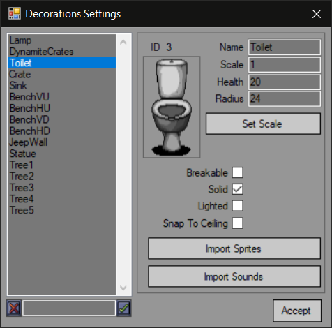

Decorations are static objects that can be destroyed by player.
Everything here is essentially the same as with enemies. The editor is available at "Decorations Settings" menu in "Entities Settings".

Decoration properties:
Health - decoration health.
Radius - sets decoration radius.
Breakable - sets if decoration is breakable.
Solid - sets of decoration is solid and blocks player from passing through it.
Lighted - sets if decoration is lighted by lights.
Snap to ceiling - snaps decoration to the closest solid tile right above it.